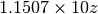
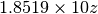

wiremesh – Wire Mesh Screens, Wind Loads¶
This program is at the edge of “construction” and “radio design”. Since it’s about windage, it’s more construction than radio.
This is part of the output:
This program may be used in the design of reflectors for antennas
So, it’s partially about radio design.
Legacy Output¶
Introduction:
WIRE MESH SCREENS by George Murphy VE3ERP
This program may be used in the design of reflectors for antennas
in the VHF/UHF frequency range, or for anything else you want to
make out of chain link fencing, chicken wire, hardware cloth, or
window screening.
The calculated effects of wind do not apply if any part of the mesh
is covered by ice, snow, leaves, plastic sheets, or other matter
that obstructs the free passage of air through the mesh.
A hexagonal mesh screen of a given size contains the same amount of
wire as a square mesh screen of the same size, if both screens have
the same size mesh (i.e. same distance between between opposite
sides of the hexagonal or square opening).
Sample Output:
SQUARE OR HEXAGONAL WIRE MESH SCREEN
ENTER: c.c. Distance across mesh opening.......(in.)? .25
....... 0.250 in. 6.3 mm
ENTER: Wire diameter...........................(in.)? .0625
....... 0.062 in. 1.6 mm
ENTER: Screen area.............................(ft²)? 12
....... 12.0 ft² 1.1 m²
Weight of this area of mesh: aluminum wire... 0.0 lb. 0.0 kg
steel wire...... 0.0 lb. 0.0 kg
copper wire..... 0.0 lb. 0.0 kg
Percent of screen area filled by wire........ 43.8 %
Wind vane area (screen area filled by wire).. 5.2 ft² 0.5 m²
Wind load on this area of vertical mesh at various wind speeds:
@ 10 knots = 12 mph = 19 km/hr = Beaufort 3.0... 1.6 lb. 0.7 kg
@ 15 knots = 17 mph = 28 km/hr = Beaufort 3.8... 4.2 lb. 1.9 kg
@ 20 knots = 23 mph = 37 km/hr = Beaufort 4.7... 6.8 lb. 3.1 kg
@ 25 knots = 29 mph = 46 km/hr = Beaufort 5.5... 11.0 lb. 5.0 kg
@ 30 knots = 35 mph = 56 km/hr = Beaufort 6.4... 16.3 lb. 7.4 kg
@ 35 knots = 40 mph = 65 km/hr = Beaufort 7.2... 22.1 lb. 10.0 kg
@ 40 knots = 46 mph = 74 km/hr = Beaufort 8.0... 28.9 lb. 13.1 kg
@ 45 knots = 52 mph = 83 km/hr = Beaufort 8.9... 36.2 lb. 16.4 kg
@ 50 knots = 58 mph = 93 km/hr = Beaufort 9.7... 44.6 lb. 20.2 kg
@ 55 knots = 63 mph =102 km/hr = Beaufort 10.6... 54.1 lb. 24.5 kg
@ 60 knots = 69 mph =111 km/hr = Beaufort 11.4... 64.6 lb. 29.3 kg
Analysis¶
Inputs:
| A: | c.c. Distance across mesh opening (in) |
|---|---|
| D: | Wire diameter (in) |
| SA: | Screen area (ft²) |
Calculations of cell data.
| LS: | length of side |
|---|---|
| CA: | Cell Area |
| WL: | Wire Length |

| LSO: | length of side omitting diameter (?) |
|---|---|
| OA: | Open Area |
| WA: | Wire Area |
Calculations of overall mesh data.
| WV: | wire volume per cell |
|---|---|
| N: | total number of cells |
| TV: | total wire volume |
| FF: | filled area factor |
| FA: | wind vane area |
Handy Constants:
610 WTA=0.0975 :REM'weight/cu.in. of aluminum
620 WTC=0.321 :REM'weight/cu.in. of copper
630 WTS=0.2835 :REM'weight/cu.in. of steel
Outputs
- Weight of this area of mesh: aluminum wire: Z=TV*WTA pounds
- Weight of this area of mesh: steel wire: Z=TV*WTS pounds
- Weight of this area of mesh: copper wire: Z=TV*WTC pounds
- Percent of screen area filled by wire: FF
- Wind vane area (screen area filled by wire): FA ft²
The wind pressure is based on this table for WP for values from 1 to 11.
100 DATA .3, .8, 1.3, 2.1, 3.1, 4.2, 5.5, 6.9, 8.5, 10.3, 12.3
for values of x such that :
- knots, K,
- mph, SM, 
- kph, KM, 
- Beaufort
- force lb. (0.4536 to convert to kg.)
This isn’t a proper Solver. It’s simply tabular display of results from cell, mesh and wind calculation.s
Implementation¶
hamcalc.construction.wiremesh
These are two limited kind of Solver that elaborates a wire mesh design.
Notes on the Beaufort Scale.
Test Cases: Wind Speed
>>> import hamcalc.construction.wiremesh as wiremesh
>>> x = wiremesh.Beaufort.to_std( 3 )
>>> round( wiremesh.KNOT.from_std( x ), 1 )
8.4
>>> round( wiremesh.MPS.from_std( x ), 1 )
4.3
>>> y = wiremesh.KNOT.to_std( 24 )
>>> round( wiremesh.MPS.from_std( y ), 1 )
12.3
>>> round( wiremesh.Beaufort.from_std( y ), 1 )
6.0
Test Cases: Wire Mesh
>>> import hamcalc.construction.wiremesh as wiremesh
>>> wm= wiremesh.mesh( A=.25, D=.0625, SA=12 )
>>> round( wm.TV*wiremesh.Al_lb_cu_in, 2 )
4.14
>>> round( wm.TV*wiremesh.Cu_lb_cu_in, 2 )
13.62
>>> round( wm.TV*wiremesh.S_lb_cu_in, 2 )
12.03
>>> round( wm.FF*100, 1 )
43.8
>>> round( wm.FA, 1 )
5.2
>>> for x in range(1,12):
... k = (x+1)*5
... f = wiremesh.force( A=.25, D=.0625, SA=12, W_k= k )
... print( k, round(f.Y_lb,1), round(f.Y_n,1) )
10 1.6 0.7
15 4.2 1.9
20 6.8 3.1
25 11.0 5.0
30 16.3 7.4
35 22.1 10.0
40 28.9 13.1
45 36.2 16.4
50 44.6 20.2
55 54.1 24.5
60 64.6 29.3
>>>
- hamcalc.construction.wiremesh.constrain(x, lo, hi)[source]¶
Constrain a value to be between lo and hi, inclusive.
- hamcalc.construction.wiremesh.force(A, D, SA, W_k=None, W_mph=None, W_kph=None, W_b=None)[source]¶
Compute force on a wire mesh for a given windspeed in knots, kph, mph or on the Beaufort scale.
This relies an in internal table that has forces for knots between 10 and 60, where . This value of x is an integer .
Therefore, wind speeds are rounded up to the nearest 5 knots.
Parameters: - A – Center-to-center distance across mesh opening (in)
- D – Wire diameter (in)
- SA – Screen area (ft²)
Returns: dict with mesh values plus force values.
- hamcalc.construction.wiremesh.mesh(A, D, SA)[source]¶
Compute a number of values for the overall wire mesh.
Parameters: - A – Center-to-center distance across mesh opening (in)
- D – Wire diameter (in)
- SA – Screen area (ft²)
Returns: dict with computed values. - WV Wire Volume per cell - N number of cells - TV total volume - FA windvane area
Quirks¶
The calculations are all done in both units. Unlike many other programs, there’s no choice between imperial and metric.
The LSO variable is never used.
Also, the usual subtleties with pounds of force and pounds of mass. Presumably, the calculation is pounds of force, which maps to newtons of force, or kilograms of force.